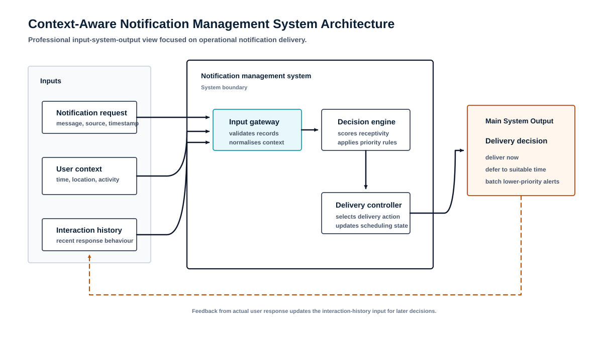
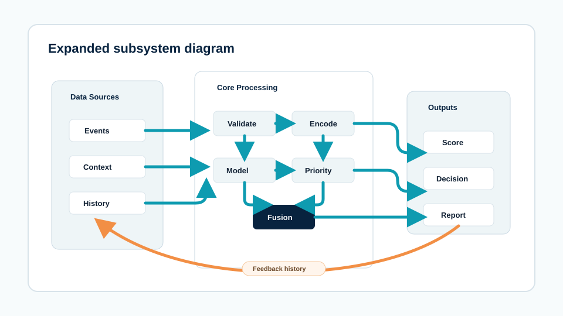
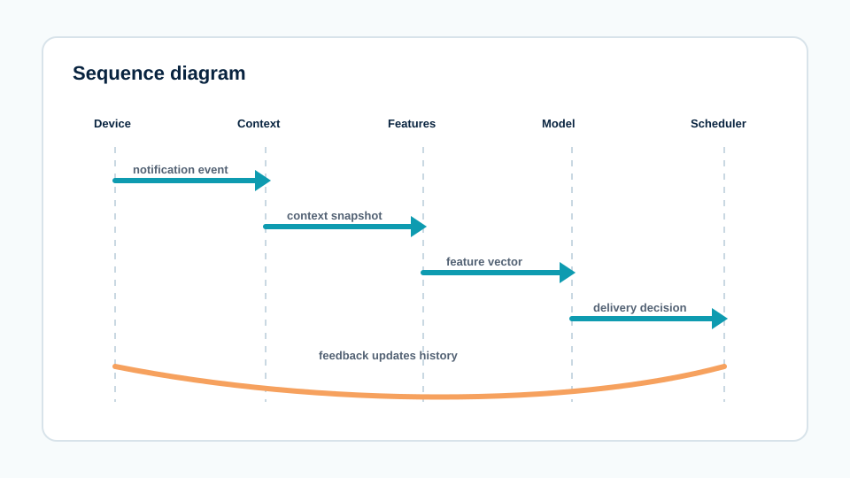
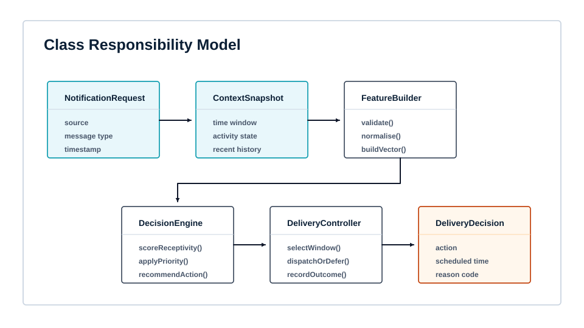

Architecture diagrams for a context-aware notification system
A technical documentation project that converted a complex research prototype into clean architecture, component, sequence and class diagrams for report and presentation use.

The Brief
The system had many moving parts, but the report needed diagrams that made the logic easy to inspect.
The prototype modelled a notification-management workflow: notification events arrive, context signals are processed, receptivity is predicted, priority evidence is considered and a delivery decision is made. The original draft had enough technical depth, but the visuals needed clearer subsystem boundaries and a more consistent diagram language.
The Diagram Problem
The challenge was to separate the system story into diagrams that each had one job.
Architecture
Show the whole system from incoming event to delivery decision without overcrowding the page.
Interaction flow
Explain how data moves between the user device, context engine, prediction model and scheduler.
Implementation structure
Represent the core classes and responsibilities without exposing code or private project details.
System Shape
Notification event, context state and interaction-history evidence enter the pipeline.
Signals are validated, converted into features and passed into the prediction subsystem.
The scheduler uses receptivity and priority evidence to support delivery, deferral or batching.
Feedback updates the history used by later decisions and evaluation summaries.
Diagram Set
The final set used different diagrams for different levels of explanation instead of forcing everything into one figure.



Outcome
The finished diagram set made the research prototype easier to explain because each visual answered a specific review question.
The public version changes labels and recreates the diagrams from scratch. Private names, raw files, exact screenshots, project paths and organisation details are not shown.
Need technical diagrams for a report or system?
Send the rough sketch, project topic, existing screenshots or system notes. The scope is reviewed before pricing.